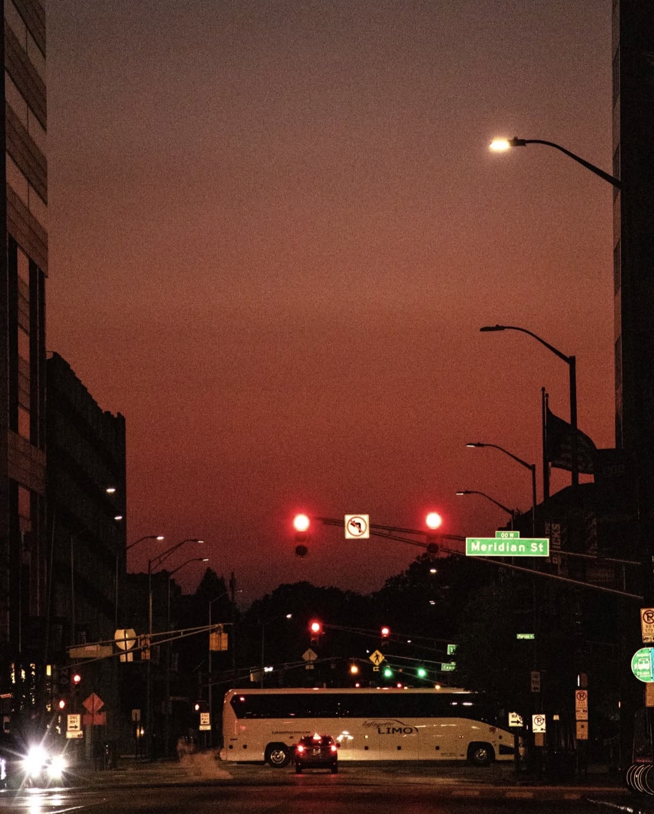
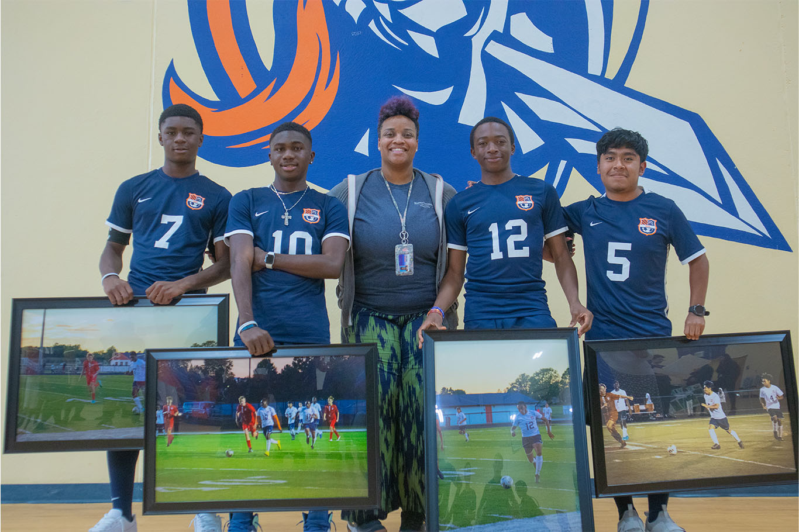
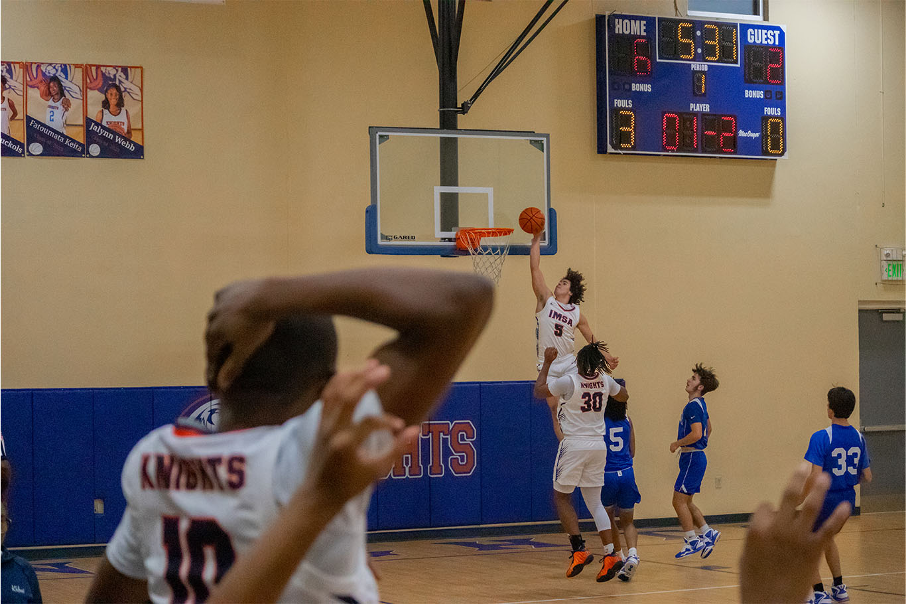
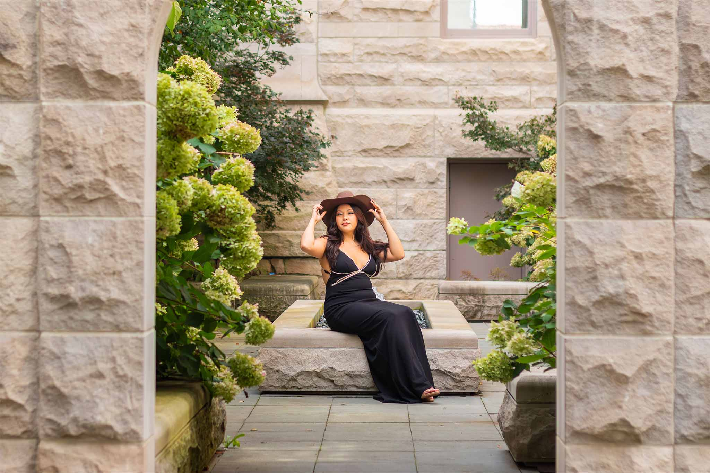

About Me
Who I am, and how I got here

I am 21 years old, from Indianapolis, Indiana, studying to become a certified Informatics Security professional. As an Informatics Security major I have studied and worked with programming languages such as C and Python, alongside experience using Linux.
In this field, I am interested in knowing more about the things that happen in the background, and how C plays a role in both protecting and breaching systems. Eventually I hope to make a career in cybersecurity, helping organizations protect their data and systems from cyber threats.
Alongside my academic pursuits, I am also a professional photographer. I have around five years of experience, and I love capturing moments and telling stories through my lens. I picked up this hobby, now profession, because I enjoy meeting new people and creating art. Whether it is portraits, events or weddings, I enjoy the challenge of capturing the essence of a moment and creating lasting memories for my clients.

A Phone and a Lockdown
I first started my photography journey at the beginning of COVID, shooting on my phone. After two years of practice and working my part-time job, I had saved enough to buy my first beginner camera.
Learning on the Sidelines
As I gained experience and kept practicing, I decided to start shooting for my school. I began with soccer, since I was already on the team, and a few of those frames ended up in the yearbook and framed as gifts for the senior players. Once basketball season started I shot for that team too, and got a lot better at catching action.


Portraits, Events & Weddings
After high school I took my photography a step further, moving into portraits of friends and family with events on the side. Now that I am in college and have a good amount of experience behind me, I have been able to build a small photography business shooting portraits and weddings.


See the Work
If you would like to see more of my photography, the full portfolio is just a click away.